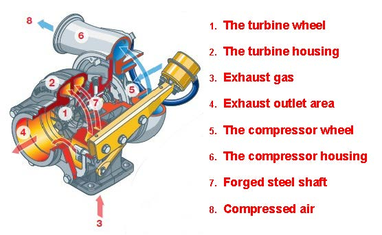

This article addresses how turbocharging can substantially increase an motor's performance without requiring the need for a physically larger engine. It clarifies how exhaust gases drive a turbine to rapidly rotate,
increasing the pressure of the air entering the engine. This process allows for more air to be supplied for combustion, resulting in greater power outputs in steadier conditions. This article also explains the
benefits of what turbocharging can bring whilst also stating its limitations. Overall, turbocharging shows how mechanical engineering can use exhaust energy to improve the engines performance.
Introduction
One of the main challenges that automotive engineering experiences is to increase the engines power output without increasing the engines physical size and weight. This is important since that even if larger engines
generate more power, they require more fuel and space. As a result engineers have proposed alternative methods to improve engine performance whilst keeping a more compact design.
A significant method that allows to combat this challenge would be a type of technology called Turbocharging. A turbocharger uses energy tansferred from exhaust gases which causes the engine to drive a turbine
connected to a compressor at extremely high speeds. This improves the engine's power to weight ratio whilst also allowing the vehicle to become more enviromentally friendly as the vehicle can output more power
whilst absorbing the same amount of fuel (Miles, 2005). This article aims to investigate how turbocharging really works and examine how it improves engine performance. It will explain the main components of a
turbocharger and evaluate its advantages and disadvantages.
Analysis and Discussion

A turbocharger is a device fitted into an internal combustion engine that increases the pressure of the air entering the enigne. It consists of two main sections: the turbine and the compressor housing
(Cummins Inc., 2026). The turbine contains two main components which are the turbine wheel and turbine housing. The turbine housing guides high-energy hot exhaust gasses from the engine towards the
turbine wheel blades, causing the turbine wheels to spin up to 150,000 rpm (Turbodynamics, n.d.). The exhaust gasses will then exit the device as the turbine housing directs the gasses through the exhaust
outlet. This process converts energy from the exhaust gasses into rotational energy.
The compressor also consists of two main components: The compressor wheel (the impeller) and the compressor housing. First, fresh air enters the vehicle through the air intake system and travels through
and intake pipe towards the air filter. The air filter removes particles that cause risk of damage to the compressor and other components of the engine - such as dust and debris. Once the air has been
filtered, it travels towards the compressor wheel through another intake pipe. The compressor wheel is designed with small curved blades and is connected to the turbine wheel by a central shaft.
When the exhaust gasses cause the turbine wheel to rotate, energy is transferred through the central shaft, triggering the compressor wheel to spin at extremely high speeds. As the compressor wheel rotates,
its curved blades causes the fresh air to be drawn into the centre of the compressor wheel - known as the inlet. The blades then accelerate the air towards the outer edge of the wheel allowing for the air
particles to gain more kinetic energy as its velocity increases. The compressor housing collects the high velocity air particles so it can convert some of its velocity into pressure, meaning that the air
pressure has increased compared to when the air first entered the system. This process is called compression. The compressor generally compresses the air to 30% above atomspheric pressure which is around
19 psi (Turbodynamics, n.d.).
As The air increases, the pressure increases as well. Therefore to cool the system down, the air particles will leave the compressor housing and travel towards the intercooler. The intercooler is not
apart of the turbocharger itself - it is a seprate component. The cooler reduces the temperature so that the density of the air can increase, allowing for more oxygen particles per unit volume and increasing
the resistance to denotation (Garrett Motion, n.d.). After passing through the intercooler, the compressed air then travels towards the engine's intake manifold, where the manifold distributes air into the
indivisual engine cylinders. Due to the fact that the air is more denser, more oxygen can enter each cylinder than would be possible without turbocharging. As a result this allows for a greater amount of fuel
to be burnt allowing the engine to generate more power.
Advantage
How does turbocharging achieve this?
Benefit
Increased power output
The compressor forces more air into the engine cylinders, allowing more fuel to be burned.
The engine can produce greater power without necessarily increasing its physical size.
Increased torque
Greater air supply allows more fuel to be burned, potentially increasing the force produced during combustion.
Improves the vehicle's pulling ability and acceleration.
Improved power-to-weight ratio
A smaller turbocharged engine can produce similar power to a larger naturally aspirated engine.
Can reduce engine size and weight while maintaining performance.
Improved fuel economy
Turbocharging can allow manufacturers to use smaller engines while maintaining the required power output.
Under suitable driving conditions, the smaller engine can consume less fuel.
Reduced CO₂ emissions
If the smaller turbocharged engine uses less fuel to travel the same distance, it can produce less CO₂.
Potentially reduces the vehicle's contribution to greenhouse gas emissions.
Miles, S. (2005) Turbochargers – Illumin Magazine - USC Viterbi School of Engineering, Illumin Magazine - USC Viterbi School of Engineering – Illumin Magazine - USC Viterbi School of Engineering.
Available at: https://illumin.usc.edu/turbochargers/(Accessed: 11 November 2026).
Cummins Inc. (2026). How a turbocharger works | Cummins Inc. [online] Available at: https://www.cummins.com/en-eu/components/turbochargers/how-a-turbocharger-works (Accessed 19 Nov. 2026).
Turbodynamics (n.d.) How does a turbocharger work? Available at: https://www.turbodynamics.co.uk/how-does-a-turbocharger-work (Accessed: 19 November 2026).
Garrett Motion. (n.d.). Guide - turbo basic knowledge. [online] Available at: https://www.garrettmotion.com/knowledge-center-category/oem/basic/ (Accessed 21 Nov. 2026).
Holset Turbochargers offered by Diamond Diesel and Turbo (n.d.). How a turbocharger works. [online] Turbochargers By Holset. Available at: https://turbochargersbyholset.com/how-a-turbo-works/
(Accessed 22 Nov. 2026).